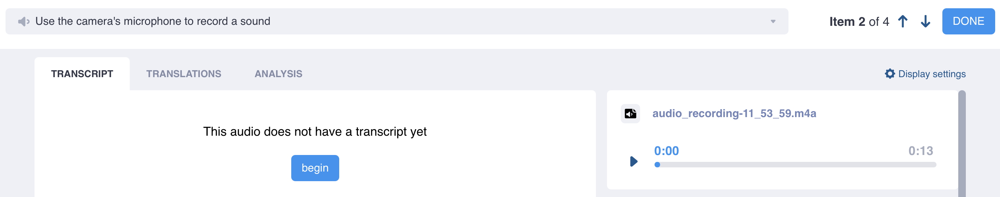
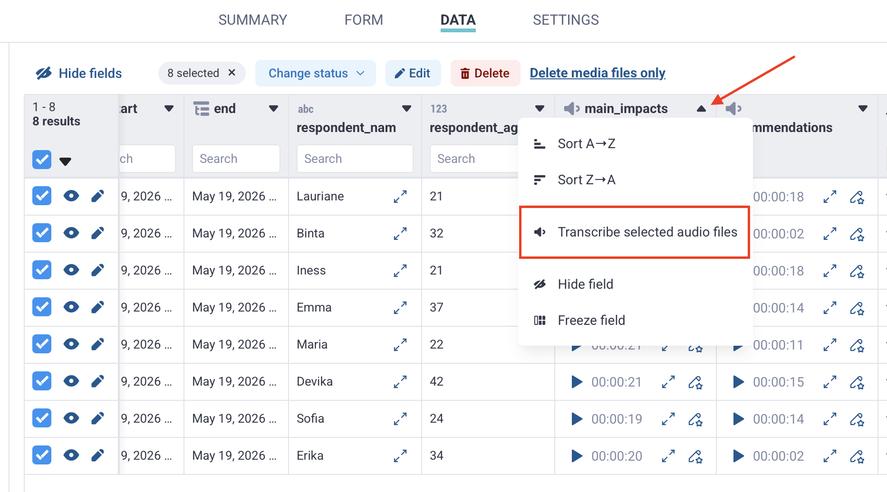
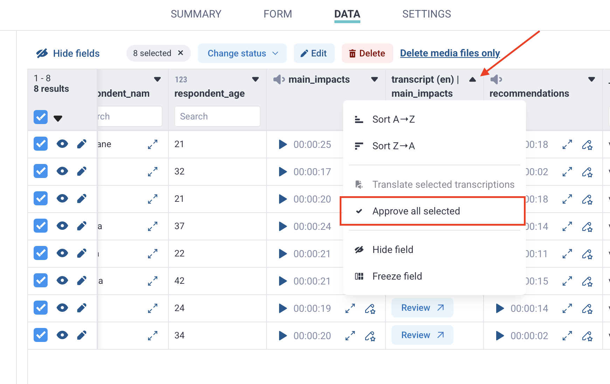
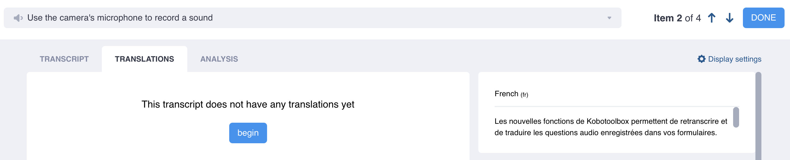
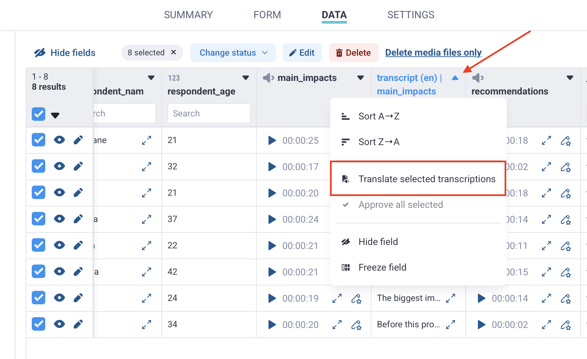

Busca en nuestra documentación, explora nuestros recursos y visita nuestro Foro de la Comunidad para obtener información más detallada
Última actualización: 6 oct 2026
Las herramientas de procesamiento del lenguaje natural de KoboToolbox te ayudan a recolectar, manejar y analizar datos cualitativos de manera más eficaz. Estas herramientas incluyen la transcripción automática de voz a texto y la traducción automática, que pueden preparar las respuestas de audio para el análisis cualitativo automatizado.
Puedes transcribir y traducir respuestas individuales o procesar varios envíos de forma masiva desde la tabla de datos. Este artículo explica cómo transcribir respuestas de audio y traducir transcripciones de forma individual o masiva, e incluye los idiomas compatibles y los límites de uso de las opciones automáticas.
Nota: Es posible que la transcripción y la traducción automáticas no estén disponibles para todos los idiomas. Para esos idiomas, solo es posible la transcripción y la traducción manuales.
Antes de transcribir o traducir respuestas de audio, debes recolectar datos de audio en tu proyecto.
Agrega una pregunta de tipo Audio a tu formulario o activa las grabaciones de sonido de fondo.
Implementa el formulario y recolecta envíos que contengan grabaciones de audio.
Nota: Para algunos idiomas compatibles, es posible que la transcripción automática no funcione con archivos de audio de más de 50 minutos. Para entrevistas largas, considera usar varias preguntas de tipo Audio individuales en lugar de una sola grabación de sonido de fondo.
Después de transcribir y traducir las respuestas de audio, la transcripción original de tus archivos de audio y todos los textos traducidos se agregan como nuevas columnas de datos en la tabla de datos y se pueden descargar junto con los datos de tu encuesta.

Para comenzar a transcribir respuestas de audio de forma individual:
Abre tu proyecto y ve a DATOS > Tabla.
Haz clic en el botón Abrir junto a la respuesta de audio que deseas transcribir.
En la pestaña TRANSCRIPCIÓN, haz clic en comenzar.
Selecciona el idioma original del archivo de audio.
Si está disponible, selecciona la opción automática. La opción manual te permitirá transcribir manualmente la grabación de audio en cualquier idioma.
Haz clic en crear transcripción para iniciar la transcripción automática.
Una vez completada la transcripción, puedes editarla manualmente. Puedes reproducir la grabación de audio en la esquina superior derecha para ayudarte a verificar la exactitud de la transcripción.
Después de editar la transcripción, haz clic en el botón Guardar para asegurarte de que tu trabajo quede almacenado de forma segura.
Cuando termines, haz clic en REALIZADO para salir, pasa al siguiente envío con las flechas junto al botón REALIZADO, o continúa a la pestaña TRADUCCIONES.
Si haces clic en REALIZADO, volverás a la vista de la tabla de datos, donde se habrá agregado una nueva columna con la transcripción.
Nota: Las transcripciones y traducciones generadas automáticamente deben guardarse para evitar la pérdida de datos. Si sales de la página sin guardar, es posible que pierdas los datos.
Puedes transcribir automáticamente las grabaciones de audio de varios envíos a la vez desde la tabla de datos.
Para transcribir respuestas de audio de forma masiva:
Abre tu proyecto y ve a DATOS > Tabla.
Selecciona los envíos que deseas transcribir con las casillas de la izquierda.
En la columna que contiene las grabaciones de audio que deseas transcribir, haz clic en la flecha del encabezado de la columna.
Haz clic en Transcribir archivos de audio seleccionados.
Selecciona el idioma y la región, y luego haz clic en Iniciar transcripción.

Las transcripciones completadas se agregan a una nueva columna en la tabla de datos y se marcan como listas para su revisión.
Revisar las transcripciones automáticas para confirmar que reflejan con exactitud las grabaciones de audio ayuda a garantizar que los datos sean confiables y estén listos para el análisis o la traducción.
Para revisar y aprobar una transcripción individual:
Haz clic en Revisar.
Realiza las ediciones necesarias.
Guarda la transcripción y pasa a la siguiente.
Para aprobar varias transcripciones a la vez:
Selecciona los envíos correspondientes con las casillas de la izquierda.
En la columna de transcripción, haz clic en la flecha del encabezado de la columna.
Haz clic en Aprobar todos los seleccionados.


Una vez que tengas una transcripción completa de tu respuesta de audio, puedes agregar traducciones a varios idiomas:
Desde la pestaña TRANSCRIPCIÓN, ve a la pestaña TRADUCCIONES.
La opción de traducción solo está disponible una vez que se ha completado una transcripción.
Haz clic en comenzar y elige el idioma de la traducción.
Si está disponible, selecciona automática para la traducción automática. La opción manual te permitirá traducir manualmente la transcripción a cualquier idioma.
Haz clic en crear traducción para iniciar la traducción automática.
Una vez completada la traducción, puedes editarla manualmente. La transcripción original aparece en la parte derecha de la pantalla y el audio original aparece debajo.
Después de editar la traducción, haz clic en el botón Guardar para asegurarte de que tu trabajo quede almacenado de forma segura.
Cuando la traducción esté completa, puedes agregar otra traducción haciendo clic en nueva traducción, pasar al siguiente envío con las flechas junto al número del elemento en la esquina superior derecha, o hacer clic en REALIZADO para volver a la tabla de datos.
Nota: Los archivos de audio solo pueden tener una transcripción, pero cada transcripción puede tener varias traducciones.
También puedes traducir automáticamente varias transcripciones a la vez desde la tabla de datos.
Para traducir transcripciones de forma masiva:
Asegúrate de que tu proyecto contenga transcripciones de audio completas.
Abre tu proyecto y ve a DATOS > Tabla.
Selecciona los envíos que contienen las transcripciones que deseas traducir con las casillas de la izquierda.
En la columna de transcripción que deseas traducir, haz clic en la flecha del encabezado de la columna.
Haz clic en Traducir transcripciones seleccionadas.
Busca y selecciona el idioma de destino, y luego haz clic en Crear traducciones.

Las traducciones completadas se agregan a una nueva columna en la tabla de datos y se marcan como listas para su revisión.
Para revisar y aprobar una traducción individual:
Haz clic en Revisar.
Realiza las ediciones necesarias.
Guarda la traducción y pasa a la siguiente.
Para aprobar varias traducciones a la vez:
Selecciona los envíos correspondientes con las casillas de la izquierda.
En la columna de traducción, haz clic en la flecha del encabezado de la columna.
Haz clic en Aprobar todos los seleccionados.
Las funciones de procesamiento del lenguaje natural de KoboToolbox integran capacidades de reconocimiento automático de voz (ASR) y traducción automática (MT) proporcionadas por Google Cloud Compute, que actualmente ofrece transcripción automática en 112 idiomas (con 142 variantes regionales) y traducción automática en 129 idiomas.
Nota: Los archivos de audio y las transcripciones solo se envían a Google Cloud Compute durante el tiempo necesario para completar la transcripción y la traducción. El servicio externo no los almacena después del procesamiento ni los utiliza para mejorar el servicio.
Para la transcripción o la traducción manual, puedes elegir entre aproximadamente 7000 idiomas de la lista completa ISO 639-3, mantenida por SIL International (filtrada para «idiomas vivos»). Si un idioma admite ASR o MT, puedes elegir entre los métodos manual y automático. Para los demás idiomas, solo está disponible el método manual.
Para ver la lista completa de idiomas compatibles, consulta Languages supported for automatic transcription and translation.
Si no encuentras un idioma en la lista, prueba con grafías o nombres alternativos. Actualmente, todos los nombres de idiomas aparecen con su nombre y ortografía en inglés (por ejemplo, Spanish en lugar de Español). Para los idiomas con menos hablantes, puede haber nombres alternativos. Por ejemplo, el idioma bura en el norte de Nigeria aparece como Bura-Pabir, pero también se conoce como Bourrah o Babir.
Nota: Al transcribir manualmente respuestas de audio, es importante seleccionar el idioma correcto. Si la transcripción generada manualmente no coincide con precisión con el idioma o la región elegidos, las traducciones automáticas posteriores que usen esa transcripción pueden ser incorrectas y contener imprecisiones.
Los usuarios del Community Plan (Plan Comunitario) pueden usar hasta 10 minutos de transcripción automática de voz a texto al mes y hasta 6000 caracteres de traducción automática de transcripciones al mes.
Nota: El procesamiento automático cuenta para estos límites independientemente de si los archivos se procesan de forma individual o masiva.
Si necesitas más capacidad de transcripción o traducción, puedes subir de categoría de plan a uno con una cuota mayor o comprar el complemento Paquete NLP (Natural Language Processing). Los complementos están disponibles según tus necesidades de procesamiento de datos, desde $9.95 por 100 minutos adicionales de transcripción y 60 000 caracteres adicionales de traducción. Siempre puedes seguir transcribiendo y traduciendo respuestas de audio manualmente sin límite de uso.
¿Encontraste lo que buscabas? ¿Te ha parecido clara la traducción? ¿Faltaba algo?
¡Comparte tus comentarios para ayudarnos a mejorar este artículo!